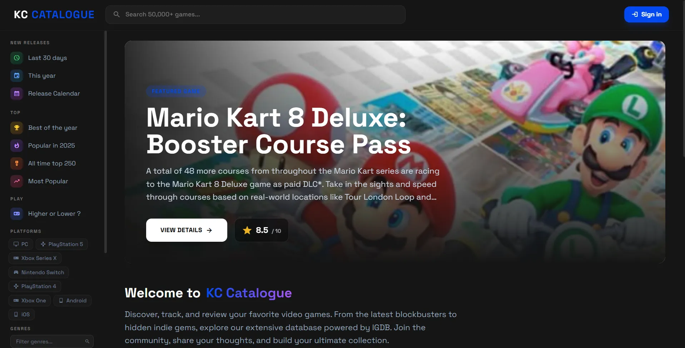

KC
CATALOGUE
Plateforme complète de gestion de collection de jeux vidéo — bibliothèque, reviews, social et mini-jeux.
LE PROJET
KC Catalogue est né d'une frustration simple : pas de plateforme qui centralise vraiment ma collection de jeux, mes envies et mes avis. J'ai donc décidé d'en construire une moi-même.
Le projet connecte l'API IGDB pour récupérer des données en temps réel sur des milliers de jeux — couvertures, notes, dates de sortie, screenshots. L'utilisateur peut ensuite gérer sa bibliothèque avec des statuts (Terminé, En cours, Abandonné...), noter les jeux sur 10, écrire des reviews, et suivre d'autres joueurs.
C'est le projet où j'ai appris le plus côté backend : architecture MVC, gestion de sessions, authentification via Passport.js avec connexion Steam, envoi d'e-mails transactionnels, et une base de données relationnelle avec plusieurs dizaines de jointures.
STACK
- Backend : Node.js, Express 5
- Base de données : MySQL avec mysql2/promise
- Templates : Nunjucks (rendu serveur)
- Auth : Passport.js, bcrypt, sessions
- API : IGDB (Twitch) — jeux, médias, métadonnées
- Email : Nodemailer (reset de mot de passe)
- Upload : Multer (avatars, bannières)
- Style : Vanilla CSS responsive
FONCTIONNALITÉS
Collection & Wishlist
Ajout de jeux à sa bibliothèque avec statuts personnalisés : Terminé, En cours, Abandonné, Wishlist. Progression visible en un coup d'œil.
Reviews & Notes
Système de notation sur 10 avec critiques rédigées. Chaque jeu agrège les avis de la communauté pour afficher une note globale sur la plateforme.
Social & Profils
Système de suivi entre utilisateurs, profils publics personnalisables (avatar, bannière, bio), et vue de l'activité de la communauté.
Intégration IGDB
Connexion complète à l'API IGDB (Twitch) : données en temps réel, artworks, screenshots, notes de presse, dates de sortie multi-plateformes.
Higher / Lower
Mini-jeu : deviner quel jeu a la meilleure note sur la plateforme entre deux titres. Simple à jouer, difficile à maîtriser.
Calendrier de sorties
Vue calendrier des prochaines sorties de jeux. Suivre les dates importantes sans quitter la plateforme.
INTERFACE
ACCUEIL & BIBLIOTHÈQUE
La page principale affiche les jeux récents, les activités de la communauté et les recommandations basées sur l'activité IGDB. La bibliothèque personnelle offre un tri et un filtrage avancés.

FICHE JEU & REVIEWS
Chaque jeu a sa fiche détaillée : synopsis, plateformes, screenshots IGDB, note de la communauté et liste des critiques des utilisateurs. L'ajout à sa collection se fait en un clic.

PROFIL UTILISATEUR
Profil entièrement personnalisable : avatar, bannière, bio, statistiques de collection. Visible publiquement par les autres membres.